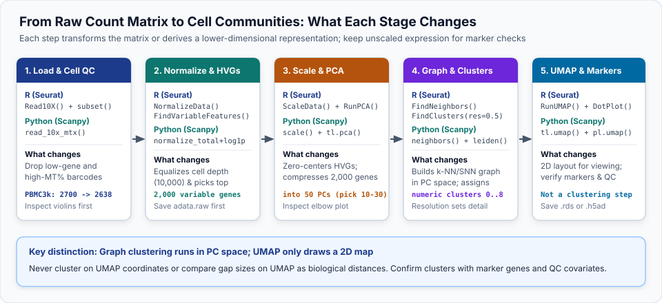
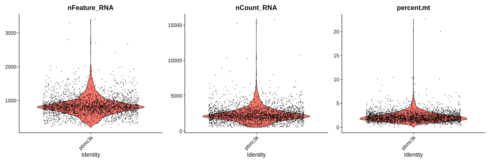
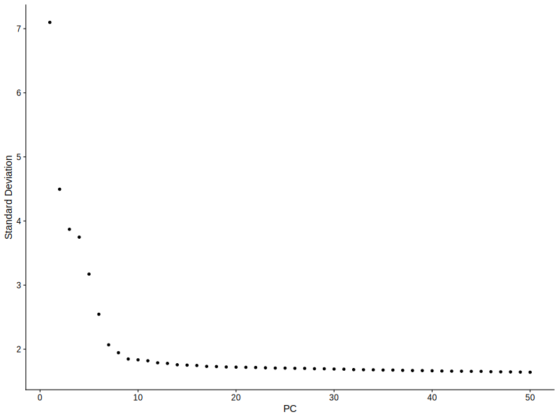
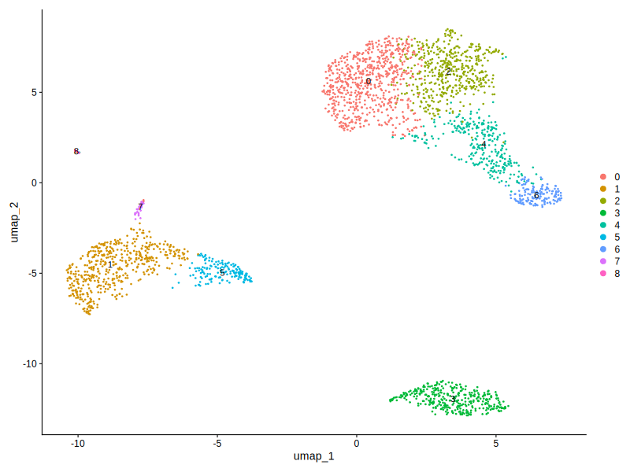

scRNA-seq Basics
Nasir Mahmood Abbasi, PhD
Bioinformatics Educator

Turn a 10x Genomics feature-barcode count matrix into quality-filtered cells, principal components, graph-based clusters, and a UMAP embedding using parallel Seurat (R) and Scanpy (Python) workflows on the public PBMC 3k dataset.
Format: Hands-on lab. Run a full single-cell QC, normalization, PCA, clustering, and UMAP workflow on the public PBMC 3k matrix. Commands below stage the data locally and walk through parallel Seurat (R) and Scanpy (Python) scripts.
What problem this solves: Raw droplet single-cell count matrices mix intact cells with empty droplets, damaged cells leaking cytoplasmic RNA, and wide differences in sequencing depth. Clustering uncleaned counts groups technical artifacts instead of cell types.
What you will be able to do:
- Stage and verify a 10x Genomics Matrix Exchange directory (
matrix.mtx,barcodes.tsv, andgenes.tsvorfeatures.tsv.gz). - Compute per-cell quality control (QC) metrics (detected genes, UMI counts, mitochondrial RNA fraction) and inspect violin distributions before filtering.
- Normalize counts, select 2,000 highly variable genes (HVGs), scale expression, and choose principal components (PCs) from an elbow plot.
- Construct a nearest-neighbor graph, run Louvain or Leiden clustering, visualize embeddings with UMAP, and check clusters against canonical PBMC marker genes.
Prerequisites & time: About 45-60 minutes. Assumes basic shell commands (Command Line Part 1), introductory R or Python, and familiarity with count matrices (Introduction to Bioinformatics).
Scope: Uses the public 10x Genomics PBMC 3k filtered matrix (2,700 input barcodes) with Seurat v4/v5 in R as the primary executed route and Scanpy in Python as a parallel route. Example thresholds (200-2,500 genes and <5% mitochondrial counts) are teaching starting points for PBMCs, calibrated per tissue and protocol on real studies.
Why each stage exists before you run the code
In droplet single-cell RNA-seq, each droplet is tagged with a cell barcode (identifying the droplet) and each captured transcript carries a unique molecular identifier (UMI) (a random tag that collapses PCR duplicates so each original mRNA molecule counts once). Three QC covariates capture most library failures:
- Detected genes per barcode (
nFeature_RNAin Seurat;n_genes_by_countsin Scanpy): very low counts flag empty droplets or degraded fragments, while unusually high counts can flag doublets (two cells captured in one droplet). - Total UMI counts per barcode (
nCount_RNAin Seurat;total_countsin Scanpy): measures sequencing depth and transcript capture per cell; scales strongly with detected genes. - Mitochondrial transcript percentage (
percent.mtin Seurat;pct_counts_mtin Scanpy): when a cell membrane ruptures during dissociation, cytoplasmic mRNA leaks out while mitochondrial transcripts remain enclosed, raising the fraction of reads mapping toMT-genes.

Why the pipeline follows this exact order:
- Cell QC before normalization: Removing broken droplets first prevents outlier cells from distorting gene-variance estimates during HVG selection.
- Log-normalization (scale factor 10,000): Divides each cell's gene counts by its total UMI count, multiplies by
10,000(counts per 10,000), and takeslog(1 + x)so differences in sequencing depth do not dominate distances between cells. - Selecting 2,000 HVGs (and saving unscaled expression): Most of the ~33,000 annotated features are zero or invariant across cells. Restricting PCA to the 2,000 genes with the highest cell-to-cell variance concentrates biological signal and reduces memory, while keeping
adata.raw(Scanpy) or the fullRNAassay (Seurat) preserves all genes for later marker plots. - Scaling and PCA: Zero-centering and unit-variance scaling puts highly and moderately expressed HVGs on a comparable scale before PCA summarizes correlated gene programs (such as T-cell or monocyte modules) into 50 orthogonal principal components.
- Neighbor graph, community detection, and UMAP:
FindNeighbors/sc.pp.neighborsbuilds a k-nearest-neighbor graph in the selected PC space (here PCs 1-10), Louvain or Leiden partitions that graph into discrete communities, and UMAP projects the same neighborhood structure into two dimensions for inspection.
Required files and workspace
The official Seurat PBMC 3k tutorial uses a public 10x Genomics PBMC archive. From your project root, download and stage its legacy matrix.mtx, barcodes.tsv, and genes.tsv files under data/pbmc3k/filtered_feature_bc_matrix (the archive extracts under filtered_gene_bc_matrices/hg19/):
mkdir -p data/pbmc3k
curl -L --fail --output /tmp/pbmc3k_filtered.tar.gz https://cf.10xgenomics.com/samples/cell/pbmc3k/pbmc3k_filtered_gene_bc_matrices.tar.gz
tar -xzf /tmp/pbmc3k_filtered.tar.gz -C data/pbmc3k
mv data/pbmc3k/filtered_gene_bc_matrices/hg19 data/pbmc3k/filtered_feature_bc_matrix
ls -lh data/pbmc3k/filtered_feature_bc_matrixCheck your staged directory: ls -lh data/pbmc3k/filtered_feature_bc_matrix should show three non-empty files: barcodes.tsv, genes.tsv, and matrix.mtx. Cell Ranger v2 exports uncompressed genes.tsv, whereas Cell Ranger v3+ exports compressed barcodes.tsv.gz, features.tsv.gz, and matrix.mtx.gz. Keep the native filenames; both Seurat Read10X and Scanpy read_10x_mtx auto-detect both layouts. On multimodal matrices (such as CITE-seq), Read10X() returns a named list where you pass pbmc.data[["Gene Expression"]] to CreateSeuratObject(), while Scanpy uses gex_only=True.
data/pbmc3k/filtered_feature_bc_matrix/: staged 10x Matrix Exchange input.results/pbmc_seurat.rdsandresults/figures/*.png: outputs created by the R/Seurat script.results/pbmc_scanpy.h5adandresults/figures/*.png: outputs created by the optional Python/Scanpy script.
Optional: software prerequisites and recording versions
The main route uses R with Seurat (v4 or v5) and ggplot2; running Leiden clustering in Seurat v5 (algorithm = 4) also requires the leidenbase R package. For the optional Python route, Scanpy requires scikit-misc for flavor="seurat_v3" and igraph plus leidenalg for sc.tl.leiden. Record your exact environment with sessionInfo() in R or python -c "import scanpy; print(scanpy.__version__)" in Python (see Conda & Mamba Part 1 for isolated environments).
Reproducible sequential workflow
Seurat (R) workflow
# R script: scripts/01_seurat_qc_clustering.R
# Input: data/pbmc3k/filtered_feature_bc_matrix/
# Output: results/pbmc_seurat.rds and figures saved to results/figures/
library(Seurat) # v4/5
dir.create("results/figures", recursive = TRUE, showWarnings = FALSE)
# 1) Load 10x data
pbmc.data <- Read10X(data.dir = "data/pbmc3k/filtered_feature_bc_matrix/")
pbmc <- CreateSeuratObject(counts = pbmc.data, project = "pbmc3k", min.cells = 3, min.features = 200)
# 2) Compute percent mitochondrial reads (human: genes starting with MT-)
pbmc[["percent.mt"]] <- PercentageFeatureSet(pbmc, pattern = "^MT-")
# 3) Visualize QC metrics and choose thresholds
png("results/figures/qc_violin.png", width=1200, height=400)
VlnPlot(pbmc, features = c("nFeature_RNA", "nCount_RNA", "percent.mt"), ncol = 3)
dev.off()
# 4) Example filtering (adjust thresholds to your experiment)
message("Cells before QC filters: ", ncol(pbmc))
pbmc <- subset(pbmc, subset = nFeature_RNA > 200 & nFeature_RNA < 2500)
message("After gene-count filters: ", ncol(pbmc))
pbmc <- subset(pbmc, subset = percent.mt < 5)
message("After mitochondrial filter: ", ncol(pbmc))
# 5) Normalize, find variable features, scale
pbmc <- NormalizeData(pbmc, normalization.method = "LogNormalize", scale.factor = 10000)
pbmc <- FindVariableFeatures(pbmc, selection.method = "vst", nfeatures = 2000)
pbmc <- ScaleData(pbmc, features = VariableFeatures(pbmc))
# 6) PCA
pbmc <- RunPCA(pbmc, features = VariableFeatures(pbmc))
png("results/figures/pca_elbow.png", width=800, height=600)
ElbowPlot(pbmc, ndims = 50)
dev.off()
# 7) Neighbors, clustering, UMAP (replace with dimensions chosen after PCA inspection)
pcs <- 1:10
pbmc <- FindNeighbors(pbmc, dims = pcs)
pbmc <- FindClusters(pbmc, resolution = 0.5) # Louvain default; Leiden (algorithm = 4) needs its documented dependency
pbmc <- RunUMAP(pbmc, dims = pcs)
png("results/figures/umap_clusters.png", width=800, height=600)
DimPlot(pbmc, reduction = "umap", label = TRUE)
dev.off()
# 8) Save object
saveRDS(pbmc, file = "results/pbmc_seurat.rds")
Save this script as scripts/01_seurat_qc_clustering.R and run it from the project root with Rscript scripts/01_seurat_qc_clustering.R. In Seurat v5, expression matrices live inside Assay5 layers (counts, data, and scale.data, inspected with Layers(pbmc) or LayerData()); all functions above work identically across Seurat v4 and v5.
Key outputs and what each step controls:
min.cells = 3, min.features = 200drops genes present in fewer than 3 cells and barcodes with fewer than 200 detected genes;VlnPlotsavesresults/figures/qc_violin.pngso you can verify the200-2,500gene and<5%mitochondrial cutoffs visually.NormalizeData,FindVariableFeatures(selection.method = "vst", nfeatures = 2000), andScaleDatastandardize library depth and isolate the 2,000 most variable genes for PCA without modifying raw counts.ElbowPlotsavesresults/figures/pca_elbow.pngacross 50 PCs so you can adjustpcs <- 1:10before building the SNN graph (FindNeighbors) and Louvain clusters (FindClusters, defaultalgorithm = 1; passalgorithm = 4for Leiden whenleidenbaseis installed).DimPlotsavesresults/figures/umap_clusters.pngandsaveRDSwritesresults/pbmc_seurat.rdswith cluster labels stored inseurat_clusters.
Scanpy (Python) workflow
# Python script: scripts/01_scanpy_qc_clustering.py
# Input: Cell Ranger filtered 10x MEX directory (gene-expression features)
# Output: results/pbmc_scanpy.h5ad and figures in results/figures/
import os
import scanpy as sc
os.makedirs("results/figures", exist_ok=True)
sc.settings.figdir = "results/figures"
# Read 10x MEX files; v3+ compressed filenames are expected by default.
adata = sc.read_10x_mtx(
"data/pbmc3k/filtered_feature_bc_matrix/",
var_names="gene_symbols",
cache=True,
gex_only=True,
)
adata.var_names_make_unique()
# Identify mitochondrial genes using the naming convention in this reference.
# Change the prefix/case rule if your feature annotation uses another convention.
adata.var["mt"] = adata.var_names.str.upper().str.startswith("MT-")
sc.pp.calculate_qc_metrics(adata, qc_vars=["mt"], percent_top=None, inplace=True)
sc.pl.violin(
adata,
["total_counts", "n_genes_by_counts", "pct_counts_mt"],
jitter=0.4,
multi_panel=True,
save="_qc_violin.png",
)
# Example filters only: inspect distributions and choose criteria for this sample.
print(f"Cells before QC filters: {adata.n_obs}")
adata = adata[adata.obs["n_genes_by_counts"] > 200].copy()
print(f"After lower gene-count filter: {adata.n_obs}")
adata = adata[adata.obs["n_genes_by_counts"] < 2500].copy()
print(f"After upper gene-count filter: {adata.n_obs}")
adata = adata[adata.obs["pct_counts_mt"] < 5].copy()
print(f"After mitochondrial filter: {adata.n_obs}")
# Preserve count values because seurat_v3 HVG selection expects counts.
adata.layers["counts"] = adata.X.copy()
sc.pp.normalize_total(adata, target_sum=1e4)
sc.pp.log1p(adata)
adata.raw = adata.copy() # log-normalized expression before restricting to HVGs
sc.pp.highly_variable_genes(
adata, n_top_genes=2000, flavor="seurat_v3", layer="counts"
)
adata = adata[:, adata.var.highly_variable].copy()
sc.pp.scale(adata, max_value=10)
# Inspect the variance plot, then use the same selected PC range below.
sc.tl.pca(adata, svd_solver="arpack")
sc.pl.pca_variance_ratio(adata, log=True, save="_pca_elbow.png")
sc.pp.neighbors(adata, n_neighbors=10, n_pcs=10) # adjust n_pcs after inspection
sc.tl.leiden(adata, resolution=0.5)
sc.tl.umap(adata)
sc.pl.umap(adata, color=["leiden"], save="_umap_clusters.png")
adata.write("results/pbmc_scanpy.h5ad")
Save this script as scripts/01_scanpy_qc_clustering.py and run it with python3 scripts/01_scanpy_qc_clustering.py. In Scanpy 1.10+, calling sc.tl.leiden(adata, resolution=0.5) without a backend emits a FutureWarning because the default backend is shifting from leidenalg to igraph; for new scripts, pass flavor="igraph", n_iterations=2, directed=False to silence the warning and use the faster backend.
sc.pl.violinwritesresults/figures/violin_qc_violin.png(Scanpy prepends the plot type tosave=) and prints cell counts after each filter step.adata.layers["counts"]retains unnormalized counts forflavor="seurat_v3", whileadata.raw = adata.copy()saves full log-normalized expression across all genes before slicingadatato 2,000 HVGs forsc.pp.scale.sc.pl.pca_variance_ratiosavesresults/figures/pca_variance_ratio_pca_elbow.pngso you can tunen_pcsbefore computingsc.pp.neighbors,sc.tl.leiden, andsc.tl.umap.adata.writesavesresults/pbmc_scanpy.h5adcontaining the scaled HVG matrix,adata.raw,layers["counts"], PC/UMAP coordinates inadata.obsm, and cluster assignments inadata.obs["leiden"].
Tested worked example: public PBMC 3k
The R/Seurat workflow above was executed on the public 10x Genomics PBMC 3k filtered matrix. This run processed 2,700 cells and 32,738 features; the shown example filters retained 2,638 cells. It completed normalization, variable-feature selection, PCA, neighbor graph construction, Louvain clustering, and UMAP. No thesis data or tumor results were used. These are outputs of one public teaching dataset run, not biological validation of the thresholds.
Tested environment: Linux, R 4.3.3, Seurat 5.0.1, SeuratObject 5.0.1, ggplot2 3.4.4, and Matrix 1.6.5. The figures below were generated by the R/Seurat route from the public filtered matrix. The optional Scanpy alternative is separate and is not represented by these R figures.
Follow the cells through the example filters
| Checkpoint | Cells retained |
|---|---|
| Input matrix | 2,700 |
| More than 200 detected genes | 2,700 |
| Fewer than 2,500 detected genes | 2,695 |
| Mitochondrial-count percentage below 5 | 2,638 |
The example removed 5 cells at the upper gene-count filter and another 57 at the mitochondrial filter: 62 removed and 97.70% retained. Treat these checkpoints as verification that your local script read the archive and applied the cutoffs as written, not as a target retention rate for every experiment.
Expected console checkpoint (R/Seurat run):
Cells before QC filters: 2700
After gene-count filters: 2695
After mitochondrial filter: 2638
If a number is 0 or drops sharply: Stop before normalization. Confirm data/pbmc3k/filtered_feature_bc_matrix/ is non-empty and verify that your mitochondrial pattern (^MT- for human symbols) matches the gene names in genes.tsv.

QC before filtering. Seurat violin plots show detected genes (nFeature_RNA), UMI counts (nCount_RNA), and mitochondrial percentage (percent.mt) across 2,700 PBMC 3k input cells. Most cells sit between 500 and 2,000 detected genes and below 5% mitochondrial reads, with a small upper tail of candidate multiplets and dying cells. Generated by the R/Seurat workflow from the public 10x Genomics PBMC 3k filtered matrix.

PCA elbow diagnostic. Standard deviation drops steeply across the first 8-10 PCs before flattening around PC 10-15. The script uses PCs 1-10 for the neighbor graph; on more complex tissues, compare 15-30 PCs and check whether marker genes separate cleanly. Generated by the R/Seurat workflow from the public 10x Genomics PBMC 3k filtered matrix.

Clustering output, not cell-type validation. Seurat produced nine Louvain communities (0-8) at resolution 0.5 among the 2,638 retained cells. These numeric labels are computational groups, not cell-type identities. No cell-type annotation, doublet calling, or clinical validation was performed. UMAP axes and inter-cluster gaps are not calibrated biological distances. Generated by the R/Seurat workflow from the public 10x Genomics PBMC 3k filtered matrix.
Inspect the saved Seurat object alongside the plots
The saved file results/pbmc_seurat.rds stores the 2,638 filtered cells, 2,000 variable features, 50 computed PCs, the 10-PC neighbor graph, Louvain clusters (seurat_clusters), and 2D UMAP coordinates.
Scope of verification: this execution verifies the displayed R/Seurat route on the public filtered count matrix only. The optional Scanpy route was not run as part of this execution. No marker-based annotation, doublet calling, clinical validation, or raw-read processing is represented by these figures.
Data source: 10x Genomics PBMC 3k filtered matrix, hg19 legacy layout (archive SHA256 847d6ebd9a1ec9a768f2be7e40ca42cbfe75ebeb6d76a4c24167041699dc28b5).
Optional PBMC marker sanity check
Before assigning biological names, verify that your numeric clusters correspond to coherent immune gene programs using a canonical PBMC marker panel: B cells (MS4A1, CD79A), T cells (CD3D, IL7R), NK cells (NKG7), monocytes (LYZ, FCGR3A), and platelets (PPBP). Checking expression across clusters confirms the clustering reflects real biology rather than library depth alone.
library(Seurat)
pbmc <- readRDS("results/pbmc_seurat.rds")
if (!("RNA" %in% SeuratObject::Assays(pbmc))) {
stop("The saved object has no RNA assay")
}
if (!("seurat_clusters" %in% colnames(pbmc[[]]))) {
stop("The saved object has no seurat_clusters column")
}
candidates <- c("MS4A1", "CD79A", "CD3D", "IL7R",
"NKG7", "LYZ", "FCGR3A", "PPBP")
features <- intersect(candidates, rownames(pbmc[["RNA"]]))
message("Candidates not present: ",
paste(setdiff(candidates, features), collapse = ", "))
if (length(features)) {
p <- DotPlot(pbmc, features = features, assay = "RNA",
group.by = "seurat_clusters") + RotatedAxis()
print(p)
dir.create("results/figures", recursive = TRUE, showWarnings = FALSE)
ggplot2::ggsave("results/figures/pbmc_marker_dotplot.png",
plot = p, width = 8, height = 5)
} else {
message("No candidate genes are present; no plot made.")
}Candidate dot plots are a sanity check rather than formal annotation; for full reference mapping and statistical marker testing, continue to Cell-Type Annotation Methods.
![Two views of the same UMAP embedding of Arabidopsis root cells, with axes UMAP1 and UMAP2. Each point is a cell. The left panel, titled 'leiden,' colors cells by clusters 0-12; these numbers are cluster identifiers, not cell-type names. The right panel, titled 'batch' in the source, colors short-root mutant cells (shr) purple and wild-type cells (wt) red; these labels identify biological genotypes, not technical batches. This is a separate public example, not an output of the OmicsHub PBMC workflow.](../images/tutorial-figures/public-plant-clusters.png)
Each point represents one cell. The left panel colors cells by Leiden cluster; the right panel colors the same cells by genotype. In the source figure, "batch" refers to short-root mutant (shr) and wild type (wt), not technical batches.
This public Arabidopsis root example is separate from the PBMC workflow above.
Source: Analysis of plant scRNA-Seq Data with Scanpy, Galaxy Training Network.
License: CC BY 4.0; image unchanged.
Data: GSE123818 (Denyer et al., 2019).
Decision guide: choosing parameters and methods
The PBMC 3k script uses simple defaults so every step is transparent. When you move to multi-sample studies or non-PBMC tissues, use this table to decide when to stick with the defaults and when to switch methods:
| Decision | Starter default | Production / alternative | When to switch |
|---|---|---|---|
| Cell QC cutoffs | Fixed bounds (200-2,500 genes, <5% MT) |
Sample-stratified MAD outliers (scuttle::isOutlier) + doublet caller (scDblFinder / Scrublet) + ambient RNA removal (SoupX / CellBender) |
Switch for multi-batch studies, high-mito tissues (heart, kidney, liver, tumors), or libraries with >3,000 cells where doublets exceed ~2-3%. |
| Normalization | LogNormalize (scale 1e4 + log1p) |
SCTransform (regularized negative binomial residuals, SCT v2 in Seurat) |
Use SCTransform when sequencing depth varies widely or when regressing covariates like percent.mt; stick with LogNormalize for >300,000 cells or non-UMI protocols like Smart-seq2. |
| PC count | 1:10 |
1:15 to 1:30 |
Increase when the elbow plot decays gradually or when rare subclusters only separate at higher PCs; check PC gene loadings first. |
| Clustering algorithm & resolution | Louvain (algorithm = 1, res = 0.5) or Scanpy Leiden |
Leiden (Seurat algorithm = 4 with leidenbase; Scanpy flavor="igraph", n_iterations=2, directed=False) |
Prefer Leiden on large graphs because it guarantees connected communities; use lower resolution (0.2-0.4) for major lineages and higher (0.8-1.2) to inspect fine subtypes. |
Interpreting outputs and troubleshooting common errors
Before moving downstream, confirm that your clusters reflect cell biology rather than technical artifacts:
- Color UMAP by QC covariates: Plot
nCount_RNA,nFeature_RNA, andpercent.mt(ortotal_counts,n_genes_by_counts,pct_counts_mt) on the UMAP. If an entire cluster is defined solely by low UMI counts or high mitochondrial fraction without distinct marker genes, inspect it as a candidate damaged-cell group. - Inspect doublet candidates carefully: A small cluster with high gene and UMI counts might be doublets (co-expressing mutually exclusive lineage markers such as
CD3DandMS4A1) or a genuinely large, transcriptionally active population (such as cycling plasmablasts). Check marker co-expression before discarding it. - Check canonical PBMC markers: In healthy PBMCs, clusters typically align with naive/memory CD4+ T cells (
IL7R,CCR7,S100A4), CD8+ T cells (CD8A), NK cells (GNLY,NKG7, lowCD3D), B cells (MS4A1,CD79A), CD14+ monocytes (CD14,LYZ), FCGR3A+ monocytes (FCGR3A,MS4A7), dendritic cells (FCER1A,CST3), and platelets (PPBP).
Common errors and symptoms with concrete fixes:
- Seurat error on multimodal 10x input (
Read10X()returns a list):
Cause: Datasets with antibody capture (CITE-seq) or CRISPR guides return a named list rather than a single matrix, soCreateSeuratObject(counts = pbmc.data)fails.
Fix: Checknames(pbmc.data)and pass the RNA matrix explicitly:CreateSeuratObject(counts = pbmc.data[["Gene Expression"]], ...). percent.mtis0for every cell:
Cause: Mouse gene symbols use lowercasemt-(notMT-), or your matrix uses Ensembl gene IDs (ENSG...) instead of gene symbols.
Fix: Inspecthead(rownames(pbmc))(R) oradata.var_names[:10](Python). Usepattern = "^mt-"for mouse symbols, or match against the chromosome/MT gene list from your GTF if using Ensembl IDs.- Scanpy
ImportErrorforscikit-miscorigraph/leidenalg:
Cause:flavor="seurat_v3"insc.pp.highly_variable_genesneedsscikit-misc, andsc.tl.leidenneedsigraphandleidenalg.
Fix: Install them in your active environment (pip install scikit-misc igraph leidenalgor via conda-forge). Ifsc.tl.leidenprints aFutureWarningabout the default backend changing toigraph, passflavor="igraph", n_iterations=2, directed=False. - Seurat v5
GetAssayData/slotdeprecation errors when inspecting matrices:
Cause: Seurat v5 stores counts and normalized data in layers (Assay5) rather than v4 slots.
Fix: UseLayerData(pbmc, assay = "RNA", layer = "counts")orLayerData(pbmc, layer = "data")instead ofslot = .... - Clusters driven by
nCount_RNAorpercent.mtinstead of markers:
Cause: Sequencing depth or cell-stress variation dominates the top PCs, or multiple samples have batch effects.
Fix: For single-sample technical trends, passvars.to.regress = c("nCount_RNA", "percent.mt")toScaleData()orSCTransform(). For multi-sample batches, use dedicated integration (see scRNA-seq Integration Strategies). - No sharp elbow in PCA, or over-clustered UMAP:
Cause: Complex tissues decay smoothly in variance, orresolutionis too high for the sample size.
Fix: Inspect top PC gene loadings withVizDimLoadings(pbmc, dims = 1:15)orDimHeatmap()(prefer these over Seurat's slow, legacyJackStrawtest, which is incompatible withSCTransform), and test resolutions from0.3to0.8alongside marker dot plots.
Practice check: diagnose two QC scenarios
- Scenario A: In a 10,000-cell PBMC run, Cluster 7 (90 cells) has twice the median
nFeature_RNAandnCount_RNAof all other clusters and expresses bothCD3D(T-cell marker) andMS4A1(B-cell marker). Should you keep it as a rare hybrid cell type or flag it? - Scenario B: On a dissociated human kidney biopsy, 38% of cells have
percent.mtbetween 6% and 14% with highnFeature_RNAand normal tubular marker expression. Should you apply the PBMCpercent.mt < 5cutoff?
Check your reasoning
Scenario A: Flag Cluster 7 as likely T-cell/B-cell doublets and confirm with a doublet caller (scDblFinder or Scrublet). High UMI and gene counts plus co-expression of mutually exclusive lineage markers is a classic heterotypic doublet signature, whereas cycling plasmablasts show high counts with B-cell/plasma markers (MZB1, JCHAIN, MKI67) rather than CD3D.
Scenario B: Do not blindly apply percent.mt < 5. Renal proximal tubule cells are mitochondria-rich; a strict 5% cutoff would discard viable epithelium. Plot nFeature_RNA against percent.mt per sample, distinguish damaged low-gene/high-MT cells from high-gene/moderate-MT tubular cells, and set a tissue-appropriate or MAD-based threshold.
Practical boundaries and version notes
- Pin package versions: Seurat and Scanpy defaults evolve across major releases. Record
sessionInfo()(R) orpip freeze(Python) alongside your analysis script. - Match mitochondrial patterns to your reference: Human symbols use
^MT-, mouse uses^mt-, and Ensembl IDs require mapping against mitochondrial gene annotations. - UMAP reproducibility: UMAP is stochastic and version-sensitive. Record random seeds (Scanpy defaults to
random_state=0; Seurat defaults toseed.use = 42inRunUMAP) and do not expect identical coordinates across OSes or package versions. - Human data governance: Clinical or donor scRNA-seq matrices can carry identifiable metadata; follow IRB and data-use agreements before sharing objects.
Checklist before moving on
- Confirm
data/pbmc3k/filtered_feature_bc_matrix/holds valid 10x files and log your starting cell count. - Inspect
qc_violin.pngbefore applying filters; confirm retained cell counts match expectations without silent zeroing. - Verify
pca_elbow.pngand adjust PC count if major biological variation extends past PC 10. - Check
umap_clusters.pngcolored by both QC covariates and canonical markers before assigning biological labels. - Archive software versions, random seeds, and input checksums alongside
results/pbmc_seurat.rdsorresults/pbmc_scanpy.h5ad.
References
- Hao Y, Stuart T, Kowalski MH, et al. (2024). Dictionary learning for integrative, multimodal and scalable single-cell analysis. Nature Biotechnology, 42, 293-304 (Seurat v5). doi:10.1038/s41587-023-01767-y
- Wolf FA, Angerer P, Theis FJ (2018). SCANPY: large-scale single-cell gene expression data analysis. Genome Biology, 19, 15. doi:10.1186/s13059-017-1382-0
- Traag VA, Waltman L, van Eck NJ (2019). From Louvain to Leiden: guaranteeing well-connected communities. Scientific Reports, 9, 5233. doi:10.1038/s41598-019-41695-z
- Luecken MD, Theis FJ (2019). Current best practices in single-cell RNA-seq analysis: a tutorial. Molecular Systems Biology, 15(6), e8746. doi:10.15252/msb.20188746
- Heumos L, Schaar AC, Lance C, et al. (2023). Best practices for single-cell analysis across modalities. Nature Reviews Genetics, 24, 550-572, and Single-cell Best Practices: Quality Control.
- Official tool docs: Seurat PBMC 3k vignette, Seurat SCTransform vignette, Scanpy documentation, and 10x Genomics Gene Expression support.
Next steps in this track:
- Deepen sample and droplet QC in Quality Control Fundamentals or evaluate multi-batch integration in scRNA-seq Integration QC: LISI and Silhouette and scRNA-seq Integration Strategies.
- Move from numeric clusters to labeled cell types in Cell-Type Annotation Methods and compare pseudobulk differential expression and signaling in Single-Cell RNA-seq Downstream Analysis.
Author: Nasir Mahmood Abbasi, PhD - Category: Single-Cell RNA-seq